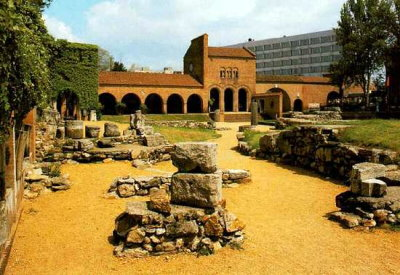

|
|
| |
Im Gebiet der Stadt sind
schon aus der Neusteinzeit (5. Jahrtausend v.Ch.) menschlich
Siedlungsspuren bekannt, große Gräberfelder
charakterisieren die Zeit der Awaren, die im 9.
Jahrhundert n.Ch. mal hier waren. Schon zu den frühen
Zeiten
zeigte sich, dass die spätere Stadt ein Knotenpunkt wichtiger
Handelswege war. Zur Römerzeit hieß die Ortschaft
Alba Regia, was auf die hier Herrschenden deutet.
|
Aus
Alba Regia entwickelte sich der heutige Name der Stadt
Székesfehérvár,
wortwörtlich identisch übersetzt
Stuhlweißenburg
auf Deutsch.
Die Benennung beherbergt
die weiße
Farbe, die Farbe der Könige, ferner haben Stuhl mit
Thron und
Burg mit dem Herrscherhaus
zu tun.
|
Großwesir
Géza, der Vater
des
Hl. Stefans war der letzte ungekrönte Oberhaupt der Ungarn. Er
errichtete für
sich eine aus Stein befestigte Burg, darin einen Palast, eine Kirche,
in der er bestattet wurde. Hier entwickelte
sich Ungarns älteste
Stadt, sie
ist heute die historische
Hauptstadt von Ungarn.
|
Der Legende nach wurde der Hl.
Sefan zu Weihnachten im Jahre 1.000 hier gerkrönt. Es gibt
jedoch keine historische Quelle, die die
Krönungsstätte
des Hl. Stefans, des ersten Königs der Ungarn belegen
könnte. Man vermutet
auch Esztergom, den Sitz
des damals einzigen Erzbistums von Ungarn oder
Stuhlweißenburg, wo schon der
Vater des Hl. Stefans residierte. Belegt ist, dass alle 43
nachfolgenden Könige
nach seinem Tode im Jahre 1038 bis zur türkischen Invasion von
Ungarn im Jahre
1543 in Stuhlweißenburg gekrönt wurden. Im Falle des
Béla IV. (1235-1270) gab
es auch keine Ausnahme. Obwohl er in kriegerische Auseinandersetzungen
verwickelt
bereits anderswo gekrönt wurde, die amtliche Zeremonie musste
im Jahre 1236 nach
damaligen Vorschriften in Stuhlweißenburg nachgeholt werden.
Er war es, der nach dem Mongolesturm die Hauptstadt Ungarns nach Buda
verlegte. 15 der hier gekrönten
Oberhäupter, insgesamt 22 ungarische Könige wurden in
der Basilika von Stuhlweißenburg
bestattet.
Der Hl. Stefan erhob die Siedlung zur Stadt und ließ hier
eine Basilika bauen, in der die Schatzkamer, das Landesarchiv, die
Hoheitszeichen des Landes aufbewahrt und zweimal im Jahr Landtage
abgehalten wurden.
Bemerke:
zu damaligen Zeiten gab es noch kein Frankreich, kein England
und das Hl. Römisches Land deutscher Nationen bestand
aus einzelnen Fürstentümern, als es in Ungarn schon
demokratische Wahlen gab - genauso wie seit Jahrhunderten
gewohnt, nunmehr im Sinne eines christlichen Landes zwischen
Kirchenmauern.
Stuhlweißenburg entwickelte sich prächtig, bis die
Türken die Stadt im Jahre 1543 eroberten.
|
Was
die Türken nicht im Kampf gegen die ungarischen Truppen
zerstörten,
vernichteten sie öfter um Exemplare zu statuieren oder aus
Rache, als sie im Jahre 1668 aus der Stadt
vertrieben wurden. Nach der Türkenzeit
blieben hier nur noch 200 Wohnhäuser in einem
erbärmlichen
Zustand zurück. Wenige
Hundert
Einwohner ungarischer und serbischer Nationalitäten
konnten sich verstecken, als sie von den Türken im
letzten Moment zum Abschlachten gesucht wurden. Auch 14
Kühe und 13
Pferde liefen den Türken davongelaufen, als sie im letzten
Moment
alles
Lebendige zum Abschlachten suchten.
Aus
mittelalterlicher Zeit blieben
- außer der sehr hübschen gotischen Annakapelle
neben dem Dom - nur Mauerreste und Trümmer
übrig.
|
|
1777
wurde die Stadt zum Bischofssitz erhoben, hieß in der
Habsburger Ära Stuhlweißenburg und erlebte
einen spätbarocken Bauboom durch die neuen Siedler aus
Mähren,
überwiegend jedoch aus dem deutschsprachigen Raum.
|
In
dieser
Zeit
wurden vornehme
spätbarocke Bauwerke errichtet, die auch heute das Bild der
Innenstadt pärgen: Rathaus und Bischofspalais,
Franziskanerkloster und Priesterseminar.
Bild rechts:
Der Palast der Grafen
Zichy ist heutige das Rathaus. Ebenfals damals
gebaut
wurden die Zisterzienserkirche, der
doppeltürmige Dom sowie die Apotheke "Zum schwarzen Adler" mit
ihrer historischen Einrichtung. |
|
|
| |
|
Die wichtigsten
Sehenswürdigkeiten in Stuhlweißenburg:
|
-
Die Ruinenstätte
„Romkert“ (Bild rechts) ist eine Nationale
Gedenkstätte hinter dem bischöflichen Palast. Hier
kann man sich die Krönungs- und Heiratszeremonie, sowie die
Bestattung der Könige
an den Originalplätzen vorstellen.
-
Im
„Egyházmegyei Múzeum“ sind
die Schätze der Könige und die
in eine Herme gefasste Kopfreliquie des Hl. Stefans ausgestellt.
-
Die alte Domkirche ist eine
der schönsten Barockkirchen in
Ungarn. Von sakralem Wert ist der Sarg des Königs
Béla III. und seiner Frau aus
rotem Marmorstein. Die Körpersilhouetten des
Königspaares sind darin bis heute
sichtbar.
|
 |
-
Die
barocke Innenstadt ist weitestgehend in ihrem
ursprünglichen Zustand erhalten und bietet eine besondere
Ambiente für einen ausgedehnten
Spaziergang.
-
Für
Familien kann ein Besuch im „Hetedhét
Játékmúzeum“ zum Erlebnis
werden, da ist eine Sammlung von Puppen zu bewundern. Das Museum
befindet sich
im „Hiemer ház“, einem
Palastgebäude in der Innenstadt. Dort sind die Puppen in
63 Gruppierungen ausgestellt, beispielsweise in einer belagerten Burg
und in einem
Kriegsschiff. Interaktives Mitspielen ist angesagt.
-
Im
„Árpád fürdő”
(Árpádenbad)
kann man in einem denkmalgeschützten Gebäude im
Sezessionsstil Dienstleistungen
in Anspruch nehmen, wie einst die Könige.
-
„Bory
vár” ist
eine der häufigsten besuchten Sehenswürdigkeiten der
Stadt. Die von der Familie
Bory noch immer bewohnte Ritterburg wurde vom Architekten, Steinmetz
und
Kunstmahler Eugen Bory (1879-1959) ein Leben lang, in gut vier
Jahrzehnte dauernder
mühseligen Arbeit im Geist seiner Zeit erbaut –
für seine Frau, wie er sagte.
|
|
| |
|
Ungarn-Tourist Team

|
| |
| |
|